...
Cozy
Real Estate HTML5 Template
- Created: 29/07/2014
- latest Update: 31/07/2014
- By: WiselyThemes
- Email: support@wiselythemes.com
Thank you for purchasing Cozy - Real Estate Template! You will find all the help you need within the documentation below, for any further assistance feel free to contact us through our Theme Forest profile. We'll be happy to answer your questions.
About this Template
Cozy it's a high-Quality and Professional HTML5 Template design and developed to fit all the needs of a Real Estate Business. With a wide variety of custom html pages, 4 completly different homepages and lots of useful features and endless possibilities included, cozy it's a very complete and highly costumizable template that will help you promote your business and make it easy to showcase your properties.Since cozy it's a very flexible template it's also suitable for a corporate websites and to promote your work, products or services.
This template was built in HTML5 and CSS3, with parallax image effects to make it even more appealing and dynamic. It has a fully responsive structure built with Bootstrap 3.0 framework and it's retina ready, so it looks stunning on all types of screens and devices (desktop, notebook, tablet and mobile).
Google Markers PSD file
In the main folder you'll find a PSD file for the Google Markers so you can customize them acording to your needs:
- Google_Markers.psd
Html Structure
This template is based on bootstrap grid system. The grid is composed by 12 columns named "col-sm-1", "col-sm-2", "col-sm-3", ... , "col-sm-12".
Here is the general structure:
CSS/LESS Files and Structure
We are using one main LESS file and three CSS files on this template. (LESS is the dynamic stylesheet language. LESS extends CSS with dynamic behavior such as variables, mixins, operations and functions. (Learn more here
- style.less - Contains all of the specific stylings for the page
- style.css - CSS file compiled from style.less file
- bootstrap.min.css - Bootstrap grid styles
- font-awesome.min.css - Iconic font designed for Bootstrap
- cozy-real-estate-font.css - Font-face for Cozy Real Estate Custom Font
- owl.transitions.css - stylesheet for Owl Slider
Style.less structure:
/* Table of Content ================================================== #Variables #Mixins #Imports #Typography #General #Header #Navigation #Home #About #Agency detail/listing #Property detail/listing #FAQ #Pricing Tables #404 Error #Blog #Login/Resgister #Contacts #Footer #PrettyPhoto Skin Override*/
If you would like to edit a specific section of the site, simply find the appropriate label in the CSS file, and then scroll down until you find the appropriate style that needs to be edited.
Javascript Files
This template imports 22 Javascript files. The files common to all pages are grouped in the common.js file to improve the page load speed.
- bootstrap.min.js
- bootstrap-checkbox.js
- bootstrap-hover-dropdown.min.js
- chosen.jquery.min.js
- classie.js
- countUp.min.js
- freewall.js
- infobox.min.js
- jquery-1.11.1.min.js
- jquery.easing.min.js
- jquery.nicescroll.js
- jquery.placeholder.min.js
- jquery.prettyPhoto.js
- jquery.stellar.min.js
- less-1.7.0.min.js
- markerclusterer.min.js
- modernizr-2.8.1.min.js
- owl.carousel.min.js
- retina.min.js
- scripts.js
- uisearch.js
- waypoints.min.js
- waypoints-sticky.min.js
Customization and Styles
We recommend you to do all the CSS changes you might have to do on the style.less file (such as colors, fonts, etc). Once you have done all the changes, compile LESS into CSS using this online tool. It is recommended to use CSS on production instead of LESS.
If you are in development mode, you can load LESS in your html page by adding the following code before the closure of the tag <head>:
Changing colors:
The page colors can be changed in css/style.less. Open the file in an editor, go to "Variables" section and replace the value of the variable @color with your own color. There are also some other colors you might want to change (like text color and background color).
Changing font:
Cozy Template uses two embed fonts from google webfonts. Go to http://www.google.com/webfonts, choose a font and use the generated code to replace de folowing tag around line 31 on index.html:
Next, in style.less go to "Variables" section. You'll find two variables for font-family, one for all major text (@font-family) and other for headings (@headings-font-family). Replace them width the name of your choosen fonts.
Changing pattern:
The pattern can be changed in css/style.less on "Variables" section. Go to folder images/patterns and choose your favorite pattern or make your own and replace the value of the variable @pattern.
Changing Logo:
Edit images/logo.png or replace on all pages the image source in the folowing line:

Retina Images:
This template is prepared for retina displays. So, for images to look great on this type of screens, the script assumes you use Apple's prescribed high-resolution modifier (@2x) to denote high-resolution image variants on your server.
For example, if you have an image on your page that looks like this:
<img src="img/my_image.png" />
The script will check your server to see if an alternative image exists at this path:
<img src="img/my_image@2x.png" />
Note that the high-resolution image should have twice the size of the low-resolution image. For example, if the low-resolution image has 1920x400, the high-resolution image must have 3840x800.
Changing Icons:
Cozy Real Estate Template comes with a custom font specially designed for Real Estate websites. To check all the icons available, open the file fonts\cozy-real-estate.html.
To insert an icon, you just have to use the following example:
<i class="icon-house"></i>
We are also using Font Awesome for the icons. Please check http://fortawesome.github.io/Font-Awesome/icons for the full list of icons you can use.
To insert a FontAwesome icon, you just have to use the following example:
<i class="fa fa-home"></i>
Setting Menu Items selected:
To set a menu item selected, you just need to add class="active" to the <a> tag. For example, when on the home page, the title "Home" is highlighted, and on its dropdown the the title "Home Search" is also highlighted. Check the code below where class="active" is applied:
Setting Sidebar background color:
This template offers you many customization options, being one of them sidebar background color. Here are the different sidebar styles this template offers:
Sidebar with colored background and colored right offset
To use this sidebar style you need to add the class "colored" to the content wrapper and also to the sidebar wrapper. Check example below:
...
Sidebar with colored background
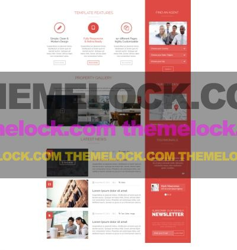
To use this sidebar style just you need to add the class "colored" to the sidebar wrapper. Check example below:
Sidebar with gray background and gray right offset
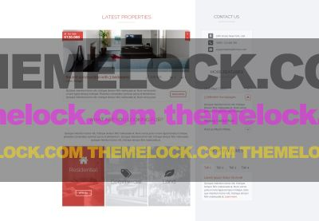
To use this sidebar style you need to add the class "gray" to the content wrapper and also to the sidebar wrapper. Check example below:
...
Sidebar with gray background
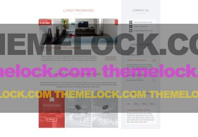
To use this sidebar style you just need to add the class "gray" to the sidebar wrapper. Check example below:
...
Sidebar with white background
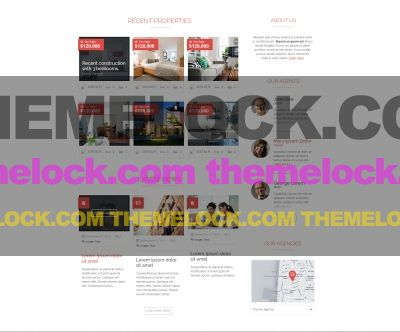
To use this sidebar style you don't need to add any special class to the wrappers. Check example below:
...
Changing grid Styles:
It was added a new style that can be applyed to some elements. Here is an image with some of that elements:
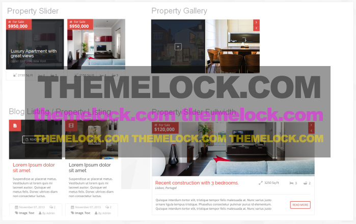
To properly apply the new style, follow the examples below:
Properties Slider:
Change the class carousel-style1 to carousel-style2.
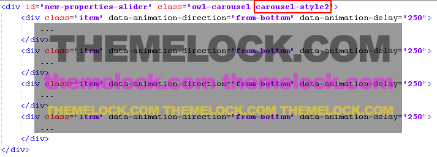
Properties Gallery:
Add the class style2 to the list of classes like the image below.
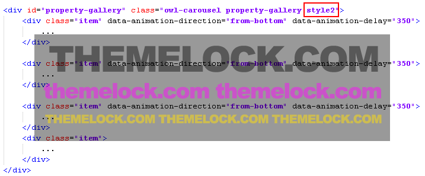
Blog Listing:
Change the class grid-style1 to grid-style2 and/or list-style to list-style2. Also, the list with class top-info was reordered to the bottom of its container.
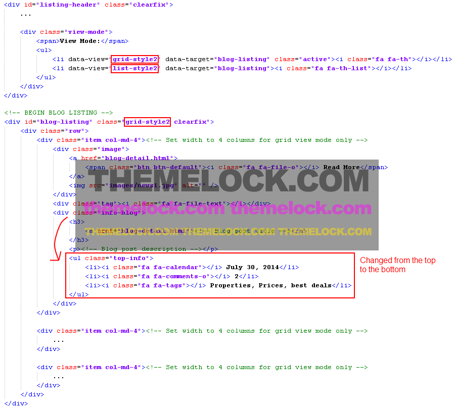
Property Listing:
The same as the Blog listing (check above).
Property Slider Fullwidth:
Add the class style2 to the list of classes like the image below.
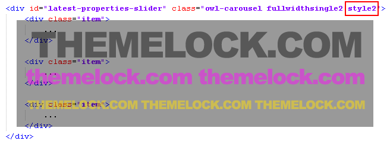
Features
Revolution Slider:
To know how configure Revolution Slider, please read the specific documentation for Revolution Slider in the directory "Documentation\Revolution Slider" (included in the package you downloaded from ThemeForest).
Home Grid:
This template offers you the possibility to display your properties on a dynamic grid. The grid will be always different on every page load, so make sure you have enough items to fill all screen sizes.
Here is an example of the grid structure:
(note that the image is set using the css property "background-image". This will ensure that the image will always fit the box using only CSS which improve page load speed).
Parallax backgrounds:
To configure a Parallax background, you need to add to the container the class "parallax" and the data attribute "data-stellar-background-ratio". The data attribute "data-stellar-background-ratio" will set the speed of the parallax background. Here is an example:
In this example the parallax will be applied to a pattern background. If you want to use a different background, use the following structure:
You can also set a color overlay to the parallax background. The options are colored-bg and dark-bg. To use them, you just need to add it on the class attribute like this:
Or
Google maps (Properties and Agencies):
Cozy is integrated with the Google Maps API v3. To change the information(title,latitude,longitude, etc) of your properties/agencies open the file js/properties.js or js/agencies.js and create your own items. The structure of the properties and agencies objects should look like this:
var properties = [
{
"id": 0,
"title": "Property 1",
"latitude":38.711451,
"longitude":-97.173278,
"image":"images/home-grid10.jpg",
"description":"Los Angeles,CA
Phone: (123) 546-7890",
"link":"property-details.html",
"map_marker_icon":"images/markers/coral-marker-residential.png"
},
{
"id": 1,
"title": "Property 2",
"latitude":34.043788,
"longitude":-118.267028,
"image":"images/home-grid10.jpg",
"description":"Los Angeles,CA
Phone: (123) 546-7890",
"link":"property-details.html",
"map_marker_icon":"images/markers/coral-marker-commercial.png"
}
];
var agencies = [
{
"id": 0,
"title": "Agency 1",
"latitude":38.711451,
"longitude":-97.173278,
"image":"images/home-grid10.jpg",
"description":"Los Angeles,CA
Phone: (123) 546-7890",
"link":"agency-detail.html",
"map_marker_icon":"images/markers/coral-marker-cozy.png"
},
{
"id": 1,
"title": "Agency 2",
"latitude":34.043788,
"longitude":-118.267028,
"image":"images/home-grid10.jpg",
"description":"Los Angeles,CA
Phone: (123) 546-7890",
"link":"agency-detail.html",
"map_marker_icon":"images/markers/coral-marker-cozy.png"
}
];
You can set the information on each item, even the marker icon(it's included markers in 16 different colors. check them in the directory images\markers).
There are also global variables for the maps. You can change them in the file js\variables.js.
Properties Map Global Variables:
- properties_cluster_marker = "images/markers/coral-marker.png"; //The URL of the cluster icon image file
- properties_cluster_textcolor = "#ffffff"; //The color of the label text shown on the cluster icon
- properties_initialZoom = 4; //The initial zoom when properties map load
- properties_selectedZoom = 14; //The zoom to apply when an property is selected
- properties_mapInitialLatitude = 38.711451; //Properties map initial Latitude
- properties_mapInitialLongitude = -97.173278; //Properties map initial Longitude
- properties_viewMore = "View More"; //Properties View More Button Text
Agencies Map Global Variables:
- agency_initialZoom = 3; //The initial zoom when agencies map load
- agency_selectedZoom = 14; //The zoom to apply when an agency is selected
- agency_mapInitialLatitude = 38.711451; //Agencies map initial Latitude
- agency_mapInitialLongitude = -97.173278; //Agencies map initial Longitude
- agency_viewMore = "View More"; //Agency View More Button Text
You can also use the default google map style by setting the variable use_default_map_style to true.
For Properties map, load Google Maps and Marker Clusterer plugins at the bottom of your page before loading scripts.js file and properties.js file after it.
Next, you just need initiate the map using the following code:
Remember to create a map canvas with id="properties_map"(in the case of the example above)
For Agencies map, load Google Maps and InfoBox plugins at the bottom of your page before loading scripts.js file and agencies.js file after it.
Next, you just need initiate the map using the following code:
Remember to create a map canvas with id="map_agency"(in the case of the example above)
To center the agency map on a particular agency, also set the id of the agency like this:
Remember to create a map canvas with id="agency_map1"(in the case of the example above)
You can also create a select box to be automatically populated widht your agencies (like the the dropdown select box below the agencies map on the index.html sidebar). To do this, add the following code below your map canvas:
PrettyPhoto:
We are using PrettyPhoto plugin to open images on a lightbox. To set a link to open on a lightbox, add the data attribute data-gal="prettyPhoto[gallery]" to the <a> tag like this:
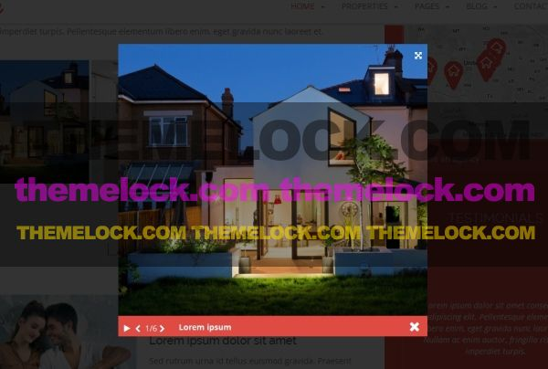
Configuring Twitter account:
To customize your twitter feed open the file js\variables.js, and change the variable twitter_username with your own username.
Next, you need to have a twitter App for your usage in order to obtain OAuth credentials, see https://dev.twitter.com/apps for help.
After creating your app, click on the tab "Api Keys" and save the "Api key" and "Api secret". Next, scroll to the bottom of the page and click "Create my access token" (you may have to refresh the page after you done this). Save the "Access token" and "Access token secret"
Open the file twitter/index.php and insert your OAuth credentials (as shown on code below), and enable caching if you wish. Your cache directory of choice must be writable by PHP.
// Your Twitter App Consumer Key private $consumer_key = 'API_KEY'; // Your Twitter App Consumer Secret private $consumer_secret = 'YOUR_CONSUMER_SECRET'; // Your Twitter App Access Token private $user_token = 'YOUR_ACCESS_TOKEN'; // Your Twitter App Access Token Secret private $user_secret = 'YOUR_ACCESS_TOKEN_SECRET';
To add a twitter slider to a page, use the following markup:
You can add more items by simply adding more <div> with class="item".
Remember to load twitter plugin at the bottom of your page before loading scripts.js file.
Social Networks Sharing:
The social network sharing is currently set on the pages blog-detail.html and properties-detail.html. Firstly, the meta tags for social networks are set at the top of the page inside <head> tag:
Next, insert your sharing info (url, image, caption) at:
Remember to encode the URL's using this tool.
Note: for Facebook sharing to work properly, use "?fb=true" at the end of your url like this:
http://www.wiselythemes.com/html/cozy/blog-detail.html?fb=true
"Load More Properties" button:
This button allows you to show hidden items of a grid listing. You can check an example of this button at the bottom of the page properties-detail.html.
To create this button use the following code:
Load More Properties
Note that the data attribute "data-grid-id" refers to the id of the grid and the "data-load-amount" to the number of items to show. Once the button is clicked, the # items with class="disabled" will show.
Here is an example of a disabled item:
"View Mode" button:
This button allows you to switch between grid a list views. To create "View Mode" button use the following structure:
View Mode:
The data attribute "data-view" refers to the class to be applied to the listing referred on the data attribute "data-target".
"Slide-to" buttons:
This button allows you to scroll to an anchor on button click. You can check an example of this button in the page agent-detail.html (button "Contact Agent").
To create a "Slide-to" button use the following structure:
Contact Agent
Note that the data attribute "data-slide-to" refers to the id of the item to scroll to.
Show content on scroll:
You have 5 different effects available to show the content on scroll (once they enter the viewport).
- fade - fade in the element
- from-top - slide the element from the top with a simultaneous fade in.
- from-bottom - slide the element from the bottom with a simultaneous fade in.
- from-left - slide the element from the left with a simultaneous fade in.
- from-right - slide the element from the right with a simultaneous fade in.
To apply those effects to an element add the data attributes data-animation-direction and data-animation-delay to the element like this:
Our Partners
The data attribute data-animation-delay referes to the delay time (in milliseconds) that the effect will start.
Contact Form:
To set your contact form information (emailTo, fromName, fromEmail and subject), open the file contact.php and set the following variables:
$emailto = 'youremail@youremail.com'; // Insert the email address that will receive the messages $fromName = 'Your Defaul From Name'; // Insert a default "Name" email address (this fiel will be displayed in the email header) $fromEmail = 'default@yourdomain.com'; // Insert a default "From" email address (this fiel will be displayed in the email header) $subject = 'Cozy Contact Form'; // Insert a default conctact form subject
Check the image below for a visual descritpion where the varibles are applied.
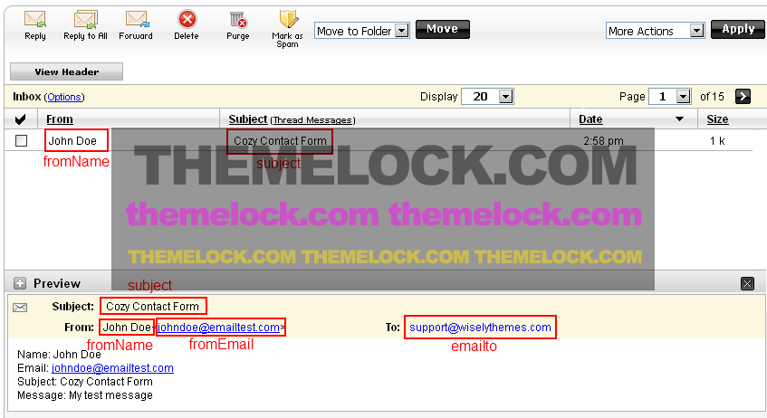
Here is the HTML markup for the contact form:
Note that in order to allow users to submit the form, you need to have a button with class submit_form (like the example above).
To make fields required, simply add the class "required" to the input field.
The variables you set in the file contact.php can be overridden by adding to the contact form input fields the classes emailTo, fromName, fromEmail or subject. This can be useful if you want to have different contact forms in different pages and each of them has different emailTo, subject, etc.
On the HTML markup example above:
- the variable formName is being overridden on the input field "Name"
- the variable fromEmail is being overridden on the input field "Email"
- the variable subject is being overridden on the input field "Subject"
The variable emailto is not being overridden, so it will use the default value set on the file contact.php. You can also override this variable using an hidden input text field like this:
Adding new fields to the contact form:
To add new fields you simply have to add them inside the html <form> tag (there's no need to change anything in the PHP or JS code.
For example, if you want to add a phone field to the contact form, you just have to use the following markup:
Note that we have set the field has required, but you can remove this by removing the class "required".
reCaptcha:
To properly add reCaptcha to your contact form, you first need to grab your reCaptcha Public and Private keys at http://www.google.com/recaptcha.
After you get your reCaptcha keys, insert your private key in the file recaptcha\verify.php in the following line:
$privatekey = "xxxxxxxxxxxxxxxx_xxxxxxxxxxxx"; // Insert your reCaptcha private key
Next, add the following markup before your sumbit button:
At last, you just need to insert your public key in the lines 23 and 36 of the example above.
Sources and Credits
The images* used in the preview template are from:
- Flickr: http://www.flickr.com/photos/buccellaassociati/6014792141/
- Flickr: http://www.flickr.com/photos/24454962@N00/7555599640/
- Flickr: http://www.flickr.com/photos/24454962@N00/7555604840/
- Flickr: http://www.flickr.com/photos/granitarchitects/8230336170/
- Flickr: http://www.flickr.com/photos/granitarchitects/8518382437/
- Flickr: http://www.flickr.com/photos/granitarchitects/8518404079/
- Flickr: http://www.flickr.com/photos/granitarchitects/8519514650/
- Flickr: http://www.flickr.com/photos/granitarchitects/9039164713/
- Flickr: https://www.flickr.com/photos/granitarchitects/9651003105
- Flickr: https://www.flickr.com/photos/granitarchitects/9651174835
- Flickr: https://www.flickr.com/photos/solar_decathlon/10176068493
- Flickr: http://www.flickr.com/photos/emilysnuffer/11919398585/
- Flickr: http://www.flickr.com/photos/emilysnuffer/12190287393/
- Flickr: https://www.flickr.com/photos/emilysnuffer/14391459251
- iStockphoto: http://www.istockphoto.com/photo/university-students-drinking-coffee-and-using-laptop-20478323
- iStockphoto: http://www.istockphoto.com/photo/enjoying-each-other-s-company-21966715
- iStockphoto: http://www.istockphoto.com/photo/break-22276595
- iStockphoto: http://www.istockphoto.com/photo/business-talks-23125988
- iStockphoto: http://www.istockphoto.com/photo/couple-in-a-loving-embrace-24892371
- Shutterstock: http://www.shutterstock.com/pic.mhtml?id=124904123&src=id
- Photodune: http://photodune.net/item/successful-business-man-with-supporting-team/gone/657865
- Photodune: http://photodune.net/item/smiling-group/3473199
- Goodfon: http://photodune.net/item/preparing-business-presentation/gone/645908
- Photodune: http://photodune.net/item/interior/1544662
- Photodune: http://photodune.net/item/office-job/1768580
- picjumbo: http://picjumbo.com/
- Super Famous: http://superfamous.com/
- Unsplash: http://unsplash.com/
- Death to the Stock Photo: http://deathtothestockphoto.com/
* Images are not included in this template.
Patterns:
- Subtle Patterns: http://subtlepatterns.com
- The Pattern Library: http://thepatternlibrary.com
Fonts:
- Google web fonts- Open Sans, 10 Styles by Steve Matteson
- Google web fonts- Raleway, 9 Styles by Multiple Designers
- Font Awesome- Iconic font designed for Bootstrap
- Cozy Real Estate Font- Custom font designed for Cozy Real Estate Template
Scripts:
- bootstrap.min.js http://getbootstrap.com/
- bootstrap-checkbox.js http://montrezorro.github.io/bootstrap-checkbox/
- bootstrap-hover-dropdown.min.js http://cameronspear.com/blog/bootstrap-dropdown-on-hover-plugin/
- chosen.jquery.min.js http://harvesthq.github.io/chosen/
- classie.js https://github.com/desandro/classie/blob/master/classie.js
- countUp.min.js http://inorganik.github.io/countUp.js/
- freewall.js http://vnjs.net/www/project/freewall/
- infobox.min.js http://google-maps-utility-library-v3.googlecode.com/svn/trunk/infobox/
- jquery-1.11.1.min.js http://jquery.com/
- jquery.easing.min.js http://api.jqueryui.com/easings/
- jquery.nicescroll.js http://areaaperta.com/nicescroll/
- jquery.placeholder.min.js http://mths.be/placeholder
- jquery.prettyPhoto.js http://www.no-margin-for-errors.com/projects/prettyphoto-jquery-lightbox-clone/
- jquery.stellar.min.js http://markdalgleish.com/projects/stellar.js/
- less-1.7.0.min.js http://lesscss.org/
- markerclusterer.min.js http://google-maps-utility-library-v3.googlecode.com/svn/trunk/markerclusterer/
- modernizr-2.8.1.min.js http://modernizr.com/
- owl.carousel.min.js http://owlgraphic.com/owlcarousel/
- retina.min.js http://imulus.github.io/retinajs/
- uisearch.js https://github.com/codrops/ExpandingSearchBar/tree/master/js
- waypoints.min.js http://imakewebthings.com/jquery-waypoints/
- waypoints-sticky.min.js http://imakewebthings.com/jquery-waypoints/
Thank You!
Once again, thank you so much for purchasing this template. As we said at the beginning, we will be glad to help you if you have any questions relating to this template.
WiselyThemes